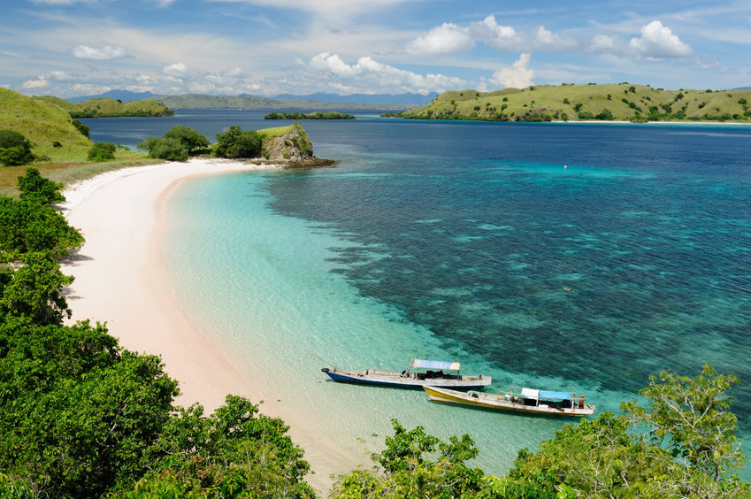

Keindahan Laut
Senin, 28 September 2026
Laut merupakan salah satu bagian terpenting dari kehidupan di bumi. Laut memiliki ekosistem yang sangat luas dan menjadi tempat hidup bagi berbagai macam makhluk hidup.
Di dalam laut terdapat berbagai macam makhluk hidup seperti ikan, terumbu karang, tumbuhan laut, ubur-ubur, penyu, dan berbagai biota laut lainnya. Keberagaman tersebut membuat laut menjadi salah satu ekosistem yang sangat indah.
Laut juga memberikan banyak manfaat bagi kehidupan manusia. Selain menjadi tempat tinggal bagi berbagai makhluk hidup, laut menyediakan sumber makanan, membantu mengatur iklim, dan menjadi bagian penting dari kehidupan masyarakat pesisir.
Oleh karena itu, menjaga kebersihan dan kelestarian laut merupakan hal yang penting agar keindahan serta kehidupan di dalamnya tetap terjaga.
